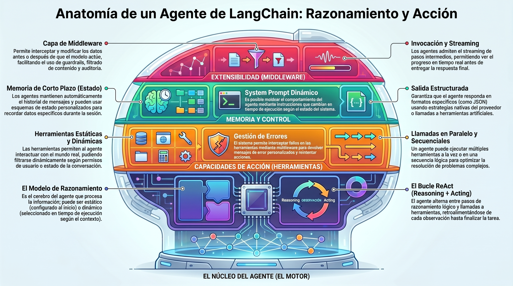

6. Introdución a los Agentes en LangChain#
Basado en la documentación oficial: LangChain Agents

6.1. ¿Qué es un Agente?#
Un agente combina un modelo de lenguaje (LLM) con herramientas para crear sistemas capaces de:
Razonar sobre tareas complejas
Decidir qué herramientas usar en cada momento
Trabajar iterativamente hasta alcanzar una solución
💡 La función principal es
create_agent, que construye un agente listo para producción usando LangGraph como motor de ejecución basado en grafos.
# Instalación necesaria
# pip install langchain langchain-openai langgraph
from langchain.agents import create_agent
from langchain.tools import tool
# Ejemplo mínimo de agente
@tool
def sumar(a: float, b: float) -> str:
"""Suma dos números."""
return str(a + b)
agent = create_agent("openai:gpt-4o-mini", tools=[sumar])
result = agent.invoke({
"messages": [{"role": "user", "content": "¿Cuánto es 15 + 27?"}]
})
print(result["messages"][-1].content)
6.2. El Bucle ReAct#
Los agentes siguen el patrón ReAct (Reasoning + Acting):
Usuario pregunta
↓
[RAZONAR] → ¿Qué herramienta necesito?
↓
[ACTUAR] → Llamar a la herramienta
↓
[OBSERVAR]→ Ver el resultado
↓
¿Tengo respuesta final? → Sí → Responder
→ No → volver a RAZONAR
# Ejemplo ilustrativo del ciclo ReAct con dos herramientas encadenadas
@tool
def buscar_producto(query: str) -> str:
"""Busca productos en el catálogo."""
# En un caso real, consultaría una base de datos
return f"Productos encontrados para '{query}': Laptop Pro X1, Laptop Air M2"
@tool
def verificar_stock(producto_id: str) -> str:
"""Verifica el stock de un producto."""
stocks = {"Laptop Pro X1": 5, "Laptop Air M2": 0}
cantidad = stocks.get(producto_id, "desconocido")
return f"Stock de {producto_id}: {cantidad} unidades"
agent = create_agent(
"openai:gpt-4o-mini",
tools=[buscar_producto, verificar_stock]
)
# El agente encadenará automáticamente las dos herramientas:
# 1. Buscará laptops → 2. Verificará el stock del resultado
result = agent.invoke({
"messages": [{"role": "user", "content": "¿Hay laptops disponibles?"}]
})
print(result["messages"][-1].content)
6.3. Componentes Principales#
Un agente en LangChain tiene estos bloques fundamentales:
Componente |
Descripción |
Obligatorio |
|---|---|---|
Modelo |
El LLM que razona |
✅ Sí |
Tools |
Las acciones que puede ejecutar |
❌ Opcional |
System Prompt |
Instrucciones de comportamiento |
❌ Opcional |
Middleware |
Lógica adicional pre/post ejecución |
❌ Opcional |
State Schema |
Estado personalizado del agente |
❌ Opcional |
6.4. El Modelo#
6.4.1. Modelo Estático#
El modelo se configura una vez y no cambia durante la ejecución.
from langchain.agents import create_agent
# Opción A: usando un string identificador (más simple)
agent = create_agent("openai:gpt-4o-mini", tools=[])
# Opción B: instanciando el modelo directamente (más control)
from langchain_openai import ChatOpenAI
modelo = ChatOpenAI(
model="gpt-4o-mini",
temperature=0.1, # Respuestas más deterministas
max_tokens=1000,
timeout=30
)
agent = create_agent(modelo, tools=[])
6.4.2. Modelo Dinámico#
Se puede cambiar el modelo en tiempo de ejecución según el contexto.
from langchain_openai import ChatOpenAI
from langchain.agents import create_agent
from langchain.agents.middleware import wrap_model_call, ModelRequest, ModelResponse
modelo_basico = ChatOpenAI(model="gpt-4o-mini") # Barato y rápido
modelo_avanzado = ChatOpenAI(model="gpt-4o") # Más potente
@wrap_model_call
def seleccion_dinamica(request: ModelRequest, handler) -> ModelResponse:
"""Usa el modelo avanzado solo cuando la conversación es larga."""
num_mensajes = len(request.state["messages"])
if num_mensajes > 10:
modelo = modelo_avanzado # Conversación larga → modelo potente
else:
modelo = modelo_basico # Conversación corta → modelo económico
return handler(request.override(model=modelo))
agent = create_agent(
model=modelo_basico,
tools=[],
middleware=[seleccion_dinamica]
)
6.5. Las Herramientas (Tools)#
Las herramientas son las acciones que el agente puede ejecutar. Se definen como funciones Python decoradas con @tool.
6.5.1. Herramientas Estáticas#
from langchain.tools import tool
from langchain.agents import create_agent
@tool
def obtener_clima(ciudad: str) -> str:
"""Obtiene el clima actual de una ciudad."""
# En producción, llamaría a una API real
climas = {
"Madrid": "☀️ Soleado, 22°C",
"Londres": "🌧️ Lluvioso, 14°C",
"París": "⛅ Nublado, 18°C"
}
return climas.get(ciudad, f"Datos no disponibles para {ciudad}")
@tool
def convertir_moneda(cantidad: float, de: str, a: str) -> str:
"""Convierte una cantidad entre divisas."""
tasas = {"EUR_USD": 1.08, "USD_EUR": 0.93, "EUR_GBP": 0.86}
clave = f"{de}_{a}"
if clave in tasas:
resultado = cantidad * tasas[clave]
return f"{cantidad} {de} = {resultado:.2f} {a}"
return "Conversión no disponible"
agent = create_agent(
model="openai:gpt-4o-mini",
tools=[obtener_clima, convertir_moneda]
)
result = agent.invoke({
"messages": [{"role": "user", "content": "¿Qué clima hace en Madrid y cuánto son 100 EUR en USD?"}]
})
print(result["messages"][-1].content)
6.5.2. Herramientas Dinámicas (Filtrado por Estado)#
No siempre conviene exponer todas las herramientas al modelo. Se pueden filtrar según el contexto.
from langchain.agents import create_agent
from langchain.agents.middleware import wrap_model_call, ModelRequest, ModelResponse
from langchain.tools import tool
@tool
def ver_saldo(cuenta: str) -> str:
"""Consulta el saldo de una cuenta bancaria."""
return f"Saldo de {cuenta}: 1.250,00 €"
@tool
def realizar_transferencia(origen: str, destino: str, cantidad: float) -> str:
"""Realiza una transferencia bancaria."""
return f"Transferencia de {cantidad}€ de {origen} a {destino}: ✅ Completada"
@tool
def ver_movimientos(cuenta: str) -> str:
"""Muestra los últimos movimientos de una cuenta."""
return f"Últimos movimientos de {cuenta}: -50€ supermercado, +1200€ nómina"
@wrap_model_call
def filtrar_por_autenticacion(request: ModelRequest, handler) -> ModelResponse:
"""Solo permite operaciones sensibles si el usuario está autenticado."""
autenticado = request.state.get("autenticado", False)
if not autenticado:
# Sin autenticación: solo herramientas de consulta básica
tools_disponibles = [t for t in request.tools if t.name == "ver_saldo"]
request = request.override(tools=tools_disponibles)
return handler(request)
agent = create_agent(
model="openai:gpt-4o-mini",
tools=[ver_saldo, realizar_transferencia, ver_movimientos],
middleware=[filtrar_por_autenticacion]
)
# Sin autenticación: solo puede ver el saldo
result = agent.invoke({
"messages": [{"role": "user", "content": "Muéstrame mi saldo y mis movimientos"}],
"autenticado": False
})
6.5.3. Manejo de Errores en Herramientas#
from langchain.agents import create_agent
from langchain.agents.middleware import wrap_tool_call
from langchain.messages import ToolMessage
from langchain.tools import tool
@tool
def dividir(numerador: float, denominador: float) -> str:
"""Divide dos números."""
return str(numerador / denominador) # ⚠️ Puede lanzar ZeroDivisionError
@wrap_tool_call
def manejar_errores(request, handler):
"""Captura errores de herramientas y devuelve mensajes amigables."""
try:
return handler(request)
except ZeroDivisionError:
return ToolMessage(
content="❌ Error: No se puede dividir entre cero. Por favor, usa un denominador diferente.",
tool_call_id=request.tool_call["id"]
)
except Exception as e:
return ToolMessage(
content=f"❌ Error inesperado: {str(e)}. Comprueba los parámetros e inténtalo de nuevo.",
tool_call_id=request.tool_call["id"]
)
agent = create_agent(
model="openai:gpt-4o-mini",
tools=[dividir],
middleware=[manejar_errores]
)
result = agent.invoke({
"messages": [{"role": "user", "content": "¿Cuánto es 10 dividido entre 0?"}]
})
print(result["messages"][-1].content)
# El agente recibirá el mensaje de error y explicará el problema al usuario
6.6. El System Prompt#
Permite definir el comportamiento, tono y especialización del agente.
6.6.1. Prompt Estático#
from langchain.agents import create_agent
from langchain.tools import tool
@tool
def buscar_informacion(query: str) -> str:
"""Busca información técnica."""
return f"Documentación técnica sobre: {query}"
# Prompt simple como string
agente_tecnico = create_agent(
model="openai:gpt-4o-mini",
tools=[buscar_informacion],
system_prompt="""Eres un asistente técnico especializado en Python y Machine Learning.
Responde siempre de forma precisa y concisa.
Cuando no sepas algo, indícalo claramente en lugar de inventar información.
Usa ejemplos de código cuando sea útil."""
)
result = agente_tecnico.invoke({
"messages": [{"role": "user", "content": "¿Cómo funciona el gradient descent?"}]
})
print(result["messages"][-1].content)
6.6.2. Prompt Dinámico#
El system prompt cambia en función del contexto del usuario.
from langchain.agents import create_agent
from langchain.agents.middleware import dynamic_prompt, ModelRequest
from typing import TypedDict
class Contexto(TypedDict):
nivel_usuario: str # "principiante", "intermedio", "experto"
@dynamic_prompt
def prompt_adaptativo(request: ModelRequest) -> str:
"""Adapta el nivel de respuesta al perfil del usuario."""
nivel = request.runtime.context.get("nivel_usuario", "intermedio")
base = "Eres un asistente de programación Python."
if nivel == "principiante":
return f"""{base}
Explica los conceptos con palabras sencillas, evita jerga técnica.
Usa analogías cotidianas y ejemplos muy básicos.
Anima al usuario y sé paciente."""
elif nivel == "experto":
return f"""{base}
El usuario tiene experiencia avanzada. Ve directo al punto.
Usa terminología técnica precisa. Omite explicaciones básicas.
Puedes discutir trade-offs, patrones de diseño y optimizaciones."""
else: # intermedio
return f"""{base}
Usa un nivel técnico moderado. Explica los conceptos pero asume
conocimientos básicos de programación."""
agent = create_agent(
model="openai:gpt-4o-mini",
tools=[],
middleware=[prompt_adaptativo],
context_schema=Contexto
)
# Para un principiante
result = agent.invoke(
{"messages": [{"role": "user", "content": "¿Qué es un decorador en Python?"}]},
context={"nivel_usuario": "principiante"}
)
print(result["messages"][-1].content)
6.7. Invocación del Agente#
from langchain.agents import create_agent
from langchain.tools import tool
@tool
def calcular(expresion: str) -> str:
"""Evalúa una expresión matemática simple."""
try:
resultado = eval(expresion) # ⚠️ Solo para demo, no usar en producción
return str(resultado)
except Exception as e:
return f"Error: {e}"
agent = create_agent(
model="openai:gpt-4o-mini",
tools=[calcular],
name="agente_matematico" # Nombre en snake_case (importante en multi-agente)
)
# --- Invocación estándar ---
result = agent.invoke({
"messages": [
{"role": "user", "content": "¿Cuánto es (15 * 4) + (100 / 5)?"}
]
})
# Acceder al mensaje final del agente
ultimo_mensaje = result["messages"][-1]
print("Respuesta:", ultimo_mensaje.content)
# Acceder al historial completo de mensajes
print("\n--- Historial completo ---")
for msg in result["messages"]:
print(f"[{msg.__class__.__name__}]: {msg.content[:80] if msg.content else '(tool call)'}")
6.8. Salida Estructurada#
Cuando necesitas que el agente devuelva datos en un formato específico.
from pydantic import BaseModel, Field
from langchain.agents import create_agent
from langchain.agents.structured_output import ToolStrategy, ProviderStrategy
from langchain.tools import tool
# Definir el esquema de salida con Pydantic
class ExtraccionDatos(BaseModel):
nombre: str = Field(description="Nombre completo de la persona")
email: str = Field(description="Dirección de correo electrónico")
telefono: str = Field(description="Número de teléfono")
empresa: str = Field(description="Empresa u organización")
@tool
def procesar_texto(texto: str) -> str:
"""Procesa un bloque de texto."""
return texto
# --- Opción A: ToolStrategy (compatible con cualquier modelo con tool calling) ---
agent_tool = create_agent(
model="openai:gpt-4o-mini",
tools=[procesar_texto],
response_format=ToolStrategy(ExtraccionDatos)
)
texto_ejemplo = """
Hola, soy María García de Acme Corp.
Puedes contactarme en maria.garcia@acme.com o al +34 612 345 678.
"""
result = agent_tool.invoke({
"messages": [{"role": "user", "content": f"Extrae los datos de contacto: {texto_ejemplo}"}]
})
datos = result["structured_response"]
print(f"Nombre: {datos.nombre}")
print(f"Email: {datos.email}")
print(f"Teléfono: {datos.telefono}")
print(f"Empresa: {datos.empresa}")
# --- Opción B: ProviderStrategy (solo modelos con structured output nativo) ---
agent_provider = create_agent(
model="openai:gpt-4o", # GPT-4o soporta structured output nativo
tools=[],
response_format=ProviderStrategy(ExtraccionDatos)
)
6.9. Memoria y Estado#
El agente mantiene automáticamente el historial de mensajes. Para información adicional, se puede definir un estado personalizado.
from typing import TypedDict, Annotated
from langchain.agents import AgentState, create_agent
from langchain.agents.middleware import AgentMiddleware
from langchain.tools import tool
import operator
# --- Estado personalizado ---
class EstadoPersonalizado(AgentState):
"""Extiende el estado base con campos adicionales."""
preferencias_usuario: dict # Preferencias almacenadas durante la sesión
contador_consultas: int # Número de preguntas realizadas
# --- Herramientas que acceden al estado ---
@tool
def guardar_preferencia(clave: str, valor: str) -> str:
"""Guarda una preferencia del usuario para esta sesión."""
# En la implementación real, accedería al estado del agente
return f"✅ Preferencia guardada: {clave} = {valor}"
@tool
def obtener_recomendacion(categoria: str) -> str:
"""Obtiene una recomendación personalizada."""
return f"Recomendación para {categoria}: Opción Premium basada en tus preferencias"
agent = create_agent(
model="openai:gpt-4o-mini",
tools=[guardar_preferencia, obtener_recomendacion],
state_schema=EstadoPersonalizado
)
# Invocar con estado inicial personalizado
result = agent.invoke({
"messages": [{"role": "user", "content": "Prefiero las respuestas en formato de lista"}],
"preferencias_usuario": {"idioma": "español", "formato": "detallado"},
"contador_consultas": 0
})
print(result["messages"][-1].content)
6.10. Streaming#
En lugar de esperar la respuesta completa, el streaming permite ver los pasos intermedios en tiempo real.
from langchain.agents import create_agent
from langchain.messages import AIMessage, HumanMessage, ToolMessage
from langchain.tools import tool
@tool
def analizar_texto(texto: str) -> str:
"""Analiza un texto y extrae información clave."""
palabras = len(texto.split())
return f"Análisis: {palabras} palabras, tono: informativo, idioma: español"
@tool
def generar_resumen(texto: str, max_palabras: int = 50) -> str:
"""Genera un resumen conciso de un texto."""
return f"Resumen (simulado): El texto trata sobre inteligencia artificial y sus aplicaciones."
agent = create_agent(
model="openai:gpt-4o-mini",
tools=[analizar_texto, generar_resumen]
)
texto_largo = """La inteligencia artificial ha revolucionado múltiples sectores industriales
en los últimos años, desde la medicina hasta la ingeniería de software..."""
print("🔄 Ejecutando agente en modo streaming...\n")
for chunk in agent.stream(
{"messages": [{"role": "user", "content": f"Analiza y resume este texto: {texto_largo}"}]},
stream_mode="values"
):
ultimo = chunk["messages"][-1]
if isinstance(ultimo, HumanMessage):
print(f"👤 Usuario: {ultimo.content[:60]}...")
elif isinstance(ultimo, AIMessage):
if ultimo.content:
print(f"🤖 Agente: {ultimo.content[:80]}...")
elif ultimo.tool_calls:
nombres = [tc['name'] for tc in ultimo.tool_calls]
print(f"🔧 Usando herramientas: {', '.join(nombres)}")
elif isinstance(ultimo, ToolMessage):
print(f"📊 Resultado herramienta: {ultimo.content[:60]}...")
print("\n✅ Ejecución completada")
6.11. Middleware#
El middleware permite interceptar y modificar el flujo del agente en diferentes puntos de ejecución.
from langchain.agents import create_agent, AgentState
from langchain.agents.middleware import AgentMiddleware, ModelRequest, ModelResponse, ToolCallRequest
from langchain.messages import SystemMessage, ToolMessage
from langchain.tools import tool
from typing import Any
import time
# --- Middleware como clase (más completo) ---
class MiddlewareDeMonitoreo(AgentMiddleware):
"""Middleware que registra métricas de uso del agente."""
def before_model(self, state: AgentState, runtime) -> dict[str, Any] | None:
"""Se ejecuta ANTES de llamar al modelo."""
num_msgs = len(state["messages"])
print(f"📥 [before_model] Enviando {num_msgs} mensajes al modelo...")
self._inicio = time.time()
return None # No modifica el estado
def after_model(self, state: AgentState, runtime) -> dict[str, Any] | None:
"""Se ejecuta DESPUÉS de recibir respuesta del modelo."""
duracion = time.time() - self._inicio
ultimo = state["messages"][-1]
tiene_tools = bool(getattr(ultimo, 'tool_calls', None))
print(f"📤 [after_model] Respuesta recibida en {duracion:.2f}s | Usa tools: {tiene_tools}")
return None
def wrap_tool_call(self, request: ToolCallRequest, handler):
"""Envuelve cada llamada a una herramienta."""
nombre = request.tool_call["name"]
args = request.tool_call.get("args", {})
print(f"🔧 [tool_call] Ejecutando '{nombre}' con args: {args}")
inicio = time.time()
resultado = handler(request)
duracion = time.time() - inicio
print(f"✅ [tool_call] '{nombre}' completada en {duracion:.3f}s")
return resultado
@tool
def buscar_en_web(query: str) -> str:
"""Simula una búsqueda en internet."""
time.sleep(0.1) # Simular latencia de red
return f"Resultados para '{query}': 3 artículos relevantes encontrados"
agent = create_agent(
model="openai:gpt-4o-mini",
tools=[buscar_en_web],
middleware=[MiddlewareDeMonitoreo()]
)
print("=== Ejecutando agente con middleware de monitoreo ===\n")
result = agent.invoke({
"messages": [{"role": "user", "content": "Busca información sobre LangChain"}]
})
print(f"\n💬 Respuesta final: {result['messages'][-1].content}")
6.11.1. Middleware con decoradores (estilo funcional)#
from langchain.agents.middleware import before_model, after_model, wrap_model_call
# Decorador @before_model: ejecuta lógica antes de llamar al LLM
@before_model
def agregar_contexto_fecha(state, runtime):
"""Inyecta la fecha actual en el estado antes de cada llamada."""
from datetime import datetime
fecha_hoy = datetime.now().strftime("%A, %d de %B de %Y")
print(f"📅 Contexto: fecha actual = {fecha_hoy}")
return None # No modifica el estado, solo registra
# Decorador @after_model: valida o transforma la salida del modelo
@after_model
def registrar_respuesta(state, runtime):
"""Registra las respuestas del modelo para auditoría."""
ultimo = state["messages"][-1]
if hasattr(ultimo, 'content') and ultimo.content:
print(f"📝 Auditoría: respuesta de {len(ultimo.content)} caracteres")
return None
agent = create_agent(
model="openai:gpt-4o-mini",
tools=[],
middleware=[agregar_contexto_fecha, registrar_respuesta]
)
6.12. Resumen Visual#

6.12.1. Tabla de referencia rápida#
Concepto |
Función/Clase |
Cuándo usarlo |
|---|---|---|
Crear agente |
|
Siempre |
Definir tool |
|
Para cada acción del agente |
Modelo simple |
|
Mayoría de casos |
Modelo con config |
|
Necesitas ajuste fino |
Prompt fijo |
|
Comportamiento constante |
Prompt dinámico |
|
Adaptar según usuario/contexto |
Salida estructurada |
|
Extraer datos estructurados |
Estado custom |
|
Persistir datos en sesión |
Streaming |
|
UX en tiempo real |
Middleware clase |
|
Lógica compleja multi-hook |
Middleware función |
|
Lógica simple en un solo punto |
Cuando usamos create_agent(), en principio no es fácil actualizar el estado del agente, por ello se ha creado el siguiente ejemplo para mostrar cómo podemos conseguir esto. Observar que en la función create_agent(), se debe usar el parámetro state_schemae igualarlo a una clase que hereda de AgentState
from langchain_core.tools import tool
from langchain_core.messages import ToolMessage
from langgraph.types import Command
from langchain.agents import create_agent
from langchain.agents import AgentState
from langchain_openai import ChatOpenAI
from dotenv import load_dotenv
from langchain_core.tools.base import InjectedToolCallId
from typing import Annotated
load_dotenv()
class MiEstado(AgentState):
usuario: str
idioma: str
turno: int
def check_weather(location: str) -> str:
"""Devuelve el tiempo para una ubicación."""
return f"Siempre hace sol en {location}"
@tool
def actualizar_usuario(
nuevo_nombre: str,
tool_call_id: Annotated[str, InjectedToolCallId] # ← inyectado automáticamente
) -> Command:
"""Actualiza el nombre del usuario."""
return Command(update={
"usuario": nuevo_nombre,
"messages": [ToolMessage(f"Usuario actualizado a {nuevo_nombre}", tool_call_id=tool_call_id)]
})
llm = ChatOpenAI(model="gpt-4o-mini", temperature=0)
agent = create_agent(
model=llm,
tools=[actualizar_usuario, check_weather],
system_prompt="Eres un asistente útil.",
state_schema=MiEstado
)
result = agent.invoke({
"messages": [{"role": "user", "content": "Cambia el usuario a Pedro"}],
"usuario": "Carlos",
"turno": 1
})
print(result["usuario"]) # → "Pedro"
Pedro